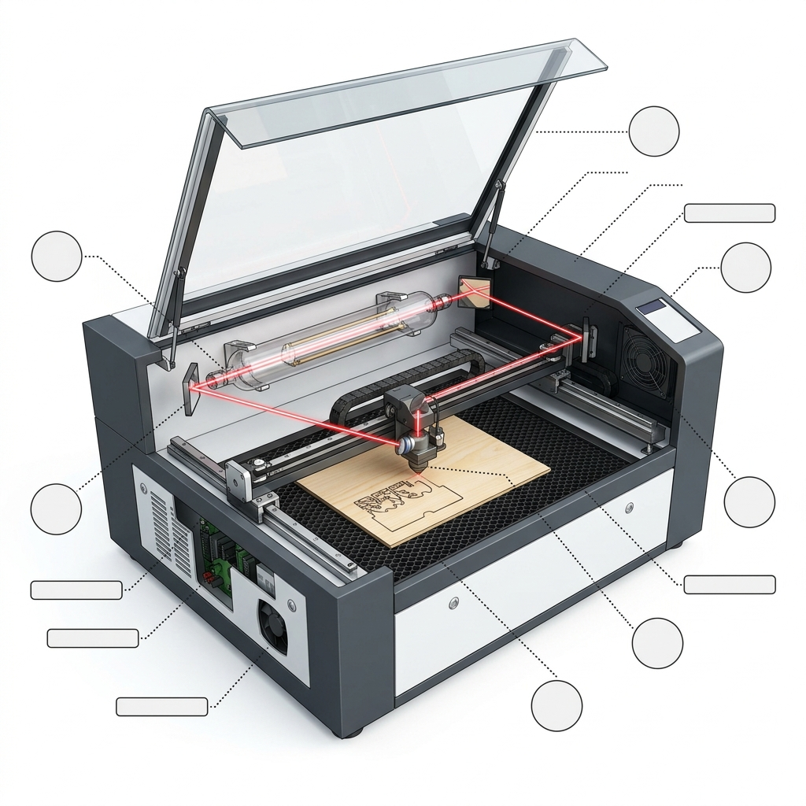

產生高能量原始光束的雷射源管體。
固定於後方，改變射出雷射方向至Y軸軌道。
安裝於X軸移動座上，導引雷射至雷射頭。
雷射頭內裝聚焦透鏡，將光束聚集成極小光點。
由步進馬達與軌道控制雷射頭在平面精確移動。
黑色蜂巢鋼板，可支撐板材、防止焦黑並利於排煙。
顯示目前檔案、設定原點位置並控制開機加工。
強力抽風機將氣化產生的毒煙與碎屑排出室外。
常規冷卻循環水，防止雷射管溫度過高爆裂損壞。
雷射嘴強力吹風，冷卻切口邊緣、預防焦黑起火。
| 雷射類型 | 適合加工材料 | 核心優勢 | 主要限制 / 缺點 |
|---|---|---|---|
| CO2 二氧化碳雷射 | 木材、壓克力、皮革、紙板、織物等非金屬 | 非金屬加工首選，切口邊緣非常光滑 | 無法直接切割或深雕金屬材料 |
| 光纖 Fiber 雷射 | 不鏽鋼、鋁、銅、黃銅等各種金屬與部分塑料 | 電光轉換率高，加工金屬速度極快且壽命長 | 設備成本非常高，完全無法加工木頭與皮革 |
| 半導體/二極體雷射 | 薄木板、皮革、紙張、部分深色壓克力 | 設備體積小巧，價格平易近人，適合個人創客 | 功率通常較低，加工速度慢，無法切割厚材 |
1. 絕對不留人離開：加工過程中必須隨時有人在旁守候，因為雷射聚焦溫度高，材料有起火燃燒的風險。
2. 落實排煙通風：切割時會產生高熱氣化煙霧，必須確認排煙軟管正常排氣，且不可切割 PVC (會產生劇毒氣體)！
3. 配戴合適波長護目鏡：雷射漫反射亦會對眼睛造成永久失明性傷害，不可肉眼直視雷射光束！